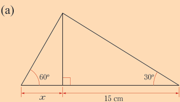
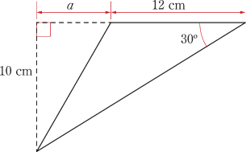
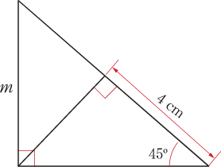
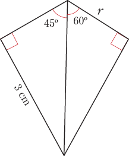
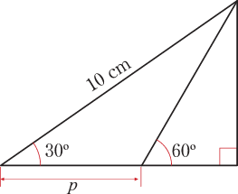

Exercise 8.2
1.
Find the exact value of each of the following expressions:
(a)
(b)
(c)
(d)
2.
If , find the following:(a)the value of .
(b), given that is an acute angle.
3.
A ladder leans against a vertical wall and makes an angle with the wall.If the highest point of the ladder is from the ground, find the length of the ladder.
4.
Without using a calculator, simplify each of the following:
(a)
(b)
5.
Find the value of each of the following:
(a)
(b)
6.
Evaluate each of the following expressions:
(a)
(b)
(c)
7.
Find the value of in the following figure.8.
The diagonal of a rectangular plot of land is long and makes an angle of with its length.Find:
(a)the length and width of the rectangular plot.
(b)the length of a wire required to enclose the plot.
9.
The roof of a godown is placed on top of the walls high as shown in the following figure.(a) Find the length of the slants (l) of the roof.
(b) How far above the ground is the highest point of the roof?
10.
One end of a rope of length 38 m is tied to the top of a flagpole and another end is fixed to a point on the ground.If the angle the rope makes with the flagpole is 45°, find:
(a) the height of the flagpole.
(b) the distance between the fixed point on the ground and the base of the flagpole.
11.
Find the value of each unknown in the following figures:
(a)

(b)

(c)
A right-angled figure with angles 45°, 60° and 30°, a vertical side split into 6 cm and x.(d)

(e)

(f)

(g)
A triangle with left side 4 cm, base angles 45° and 60°, a perpendicular from the apex to the base, and base segment u on the right.12.
Use the following figure to express y in terms of xA triangle with left side y, right side x, base angles 45° and 30°, and a perpendicular from the apex to the base.